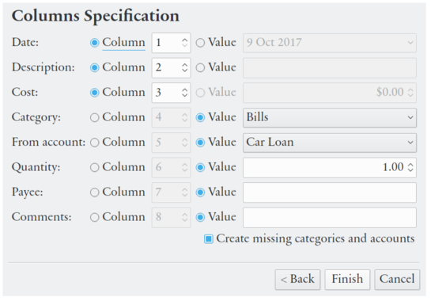
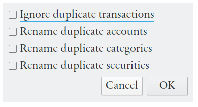

Select → → and follow the instructions. QIF is a file format that might differ much depending on the software that saved the file. How much details you will need to provide about the file depends on ambiguity of the date format, how localised the file is, and how well accounts are defined. Securities, investment transactions, memorised transactions, budgets, and classes are not imported.
This function imports data files with clear text values in columns separated by a character (comma, space, tab, etc.), with a new transaction on each row. Select → → and enter details about the structure of the file you want to import. Transaction parameters can either be imported from a column in the file or a set to a specified value.
|  |
Every account and transaction list in Eqonomize! can be saved to HTML or CSV file. HTML files are suitable for display in a web browser and CSV (comma separated values) files can be opened in most spreadsheet programs. Use → or the corresponding toolbar button to export save of list of accounts, expenses, incomes, transfers, securities or scheduled transactions. The displayed values will be exported (for accounts and securities the current time period is used and for transactions the current filter and sort order is adhered to). The ledger can be saved using the button in the upper left corner of the ledger window.
Accounts and transactions from another Eqonomize! file can be imported to the current file using → → . All accounts and transactions from the file will be copied. When the file has been selected you will be presented with alternatives for handling of duplicate transactions, accounts, categories and securities. If you select the rename options “("imported")” will be appended to the name, otherwise the transactions will be added to the already present accounts with the same name. This makes it easier to distinguish and manipulate imported transactions. (For information on how to modify/move mmultiple transactions at the same time see the section called “Edit Multiple Transaction Simultaneously”.)
|  |